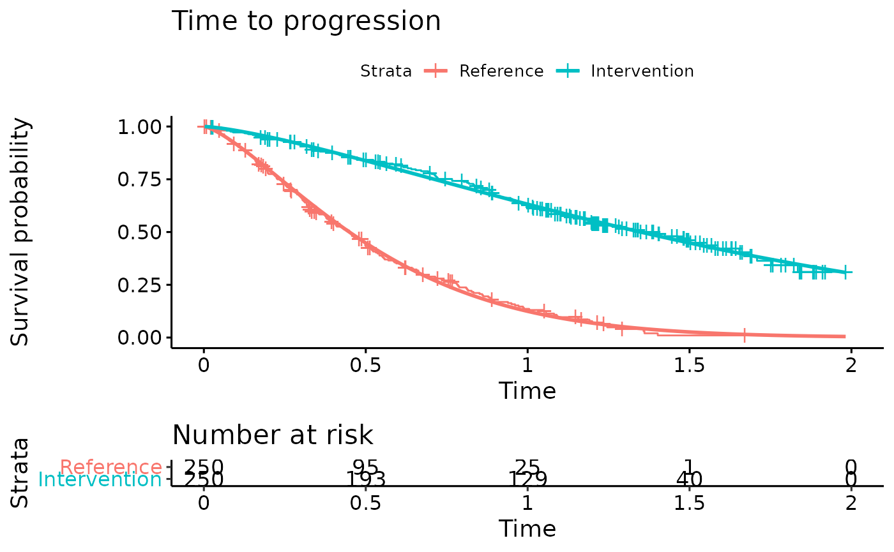

example_ipd.RmdThis document runs a discrete event simulation model using simulated individual patient data (IPD) to show how the functions can be used to generate a model when IPD from a trial is available.
The model is represented below. All patients start in the progression-free state and may move to the progressed state. At any point in time they can die, depending on the risk of each disease stage. Patients may also experience a disease event which accelerates progression.
The dummy IPD trial data is generated below using the sim_adtte() function from the flexsurvPlus package. Parametric survival models are fit to the dummy OS and TTP IPD. We are using the flexsurv package to fit the parametric survival models.
#Generate dummy IPD
tte.df <- sim_adtte(seed = 821, rho = 0, beta_1a = log(0.6), beta_1b = log(0.6), beta_pd = log(0.2))
#Change data frame to wide format
tte.df <- tte.df %>% select(-PARAM) %>% pivot_wider(names_from = PARAMCD, values_from = c(AVAL,CNSR))
#Derive Time to Progression Variable from OS and PFS
tte.df <- tte.df %>% mutate(
AVAL_TTP = AVAL_PFS,
CNSR_TTP = ifelse(AVAL_PFS == AVAL_OS & CNSR_PFS==0 & CNSR_OS==0,1,CNSR_PFS),
Event_OS = 1-CNSR_OS,
Event_PFS = 1-CNSR_PFS,
Event_TTP = 1-CNSR_TTP
)
#Add baseline characteristics (sex and age) to time to event data
IPD <- tte.df %>% mutate(
SEX = rbinom(500,1,0.5),
AGE = rnorm(500,60,8)
)
#Plot simulated OS and TTP curves
#Overall survival
km.est.OS <- survfit(Surv(AVAL_OS/365.25, Event_OS) ~ ARMCD, data = IPD) #KM curve
OS.fit <- flexsurvreg(formula = Surv(AVAL_OS/365.25, Event_OS) ~ ARMCD, data = IPD, dist = "Weibull") #Fit Weibull model to the OS data
OS.fit
#> Call:
#> flexsurvreg(formula = Surv(AVAL_OS/365.25, Event_OS) ~ ARMCD,
#> data = IPD, dist = "Weibull")
#>
#> Estimates:
#> data mean est L95% U95% se exp(est) L95% U95%
#> shape NA 1.1346 0.9764 1.3185 0.0870 NA NA NA
#> scale NA 3.1523 2.5170 3.9479 0.3620 NA NA NA
#> ARMCDB 0.5000 0.3066 0.0183 0.5949 0.1471 1.3588 1.0185 1.8129
#>
#> N = 500, Events: 150, Censored: 350
#> Total time at risk: 623.0253
#> Log-likelihood = -360.0964, df = 3
#> AIC = 726.1929
ggsurvplot(OS.fit, title="Overall survival",
legend.labs = c("Reference","Intervention"),
risk.table = TRUE)
#Time to progression
km.est.TTP <- survfit(Surv(AVAL_TTP/365.25, Event_TTP) ~ ARMCD, data = IPD) #KM curve
TTP.fit <- flexsurvreg(formula = Surv(AVAL_TTP/365.25, Event_TTP) ~ ARMCD, data = IPD, dist = "Weibull") #Fit Weibull model to the TTP data
TTP.fit
#> Call:
#> flexsurvreg(formula = Surv(AVAL_TTP/365.25, Event_TTP) ~ ARMCD,
#> data = IPD, dist = "Weibull")
#>
#> Estimates:
#> data mean est L95% U95% se exp(est) L95% U95%
#> shape NA 1.3757 1.2590 1.5033 0.0622 NA NA NA
#> scale NA 0.5865 0.5310 0.6478 0.0297 NA NA NA
#> ARMCDB 0.5000 1.0992 0.9277 1.2707 0.0875 3.0016 2.5286 3.5632
#>
#> N = 500, Events: 328, Censored: 172
#> Total time at risk: 358.9897
#> Log-likelihood = -269.0387, df = 3
#> AIC = 544.0774
ggsurvplot(TTP.fit, title="Time to progression",
legend.labs = c("Reference","Intervention"),
risk.table = TRUE)
Inputs and variables that will be used in the model are defined below. We can define inputs that are common to all patients (common_all_inputs) within a simulation, inputs that are unique to a patient independently of the treatment (e.g. natural death, defined in common_pt_inputs), and inputs that are unique to that patient and that treatment (unique_pt_inputs). Items can be included through the add_item function, and can be used in subsequent items. All these inputs are generated before the events and the reaction to events are executed. Furthermore, the program first executes common_all_inputs, then common_pt_inputs and then unique_pt_inputs. So one could use the items generated in common_all_inputs in unique_pt_inputs.
#Define variables that do not change on any patient or intervention loop
common_all_inputs <- add_item(
#Parameters from the survival models
OS.scale = as.numeric(OS.fit$coef[2]),
OS.shape = as.numeric(OS.fit$coef[1]),
OS.coef.int = as.numeric(OS.fit$coef[3]), #Intervention effect
TTP.scale = as.numeric(TTP.fit$coef[2]),
TTP.shape = as.numeric(TTP.fit$coef[1]),
TTP.coef.int = as.numeric(TTP.fit$coef[3]), #Intervention effect
#Utilities
util.PFS = 0.6, #Utility while in progression-free state
util.PPS = 0.4, #Utility while in progressed state
disutil.PAE = -0.02, #One-off disutility of progression-accelerating event
#Costs
cost.drug.int = 85000, #Annual intervention cost
cost.drug.ref = 29000, #Annual cost of reference treatment
cost.admin.SC = 150, #Unit cost for each SC administration
cost.admin.oral = 300, #One-off cost for oral administration
cost.dm.PFS = 3000, #Annual disease-management cost in progression-free state
cost.dm.PPS = 5000, #Annual disease-management cost in progressed state
cost.ae.int = 2200, #Annual adverse event costs for intervention
cost.ae.ref = 1400, #Annual adverse event costs for reference treatment
)
#Define variables that do not change as we loop through interventions for a patient
common_pt_inputs <- add_item(
#Patient baseline characteristics
Sex = as.numeric(IPD[i,"SEX"]), #Record sex of individual patient. 0 = Female; 1 =Male
BLAge = as.numeric(IPD[i,"AGE"]), #Record patient age at baseline
#Draw time to non-disease related death from a restricted Gompertz distribution
nat.death = draw_resgompertz(1,shape=if(Sex==1){0.102}else{0.115},
rate=if(Sex==1){0.000016}else{0.0000041},
lower_bound = BLAge) # Baseline Age in years
)
#Define variables that change as we loop through treatments for each patient.
unique_pt_inputs <- add_item(
fl.int = 0, #Flag to determine if patient is on intervention. Initialized as 0, but will be changed to current arm in the Start event.
fl.prog = 0, #Flag to determine if patient has progressed. All patients start progression-free
fl.ontx = 1, #Flag to determine if patient is on treatment. All patients start on treatment
fl.PAE = 0, #Flag to determine if progression-accelerating event occurred
pfs.time = NA #Recording of time at progression
)We define now the possible events that can occur for the intervention and reference arm respectively using the add_tte() function. Only patients in the intervention arm can have a treatment discontinuation, while patients in both arms can have a progression, progression-accelerating and death event. The seed argument is being used in the draw_tte() function which uses the i item to ensure that event times specific to each patient can be replicated and updated at later time points.
init_event_list <-
#Events applicable to intervention
add_tte(trt="int",
evts = c("Start",
"TxDisc",
"Progression",
"PAE",
"Death"),
input={
Start <- 0
Progression <- draw_tte(1,'weibull',coef1=TTP.shape, coef2= TTP.scale + TTP.coef.int,seed = as.numeric(paste0(1,i,simulation)))
TxDisc <- Inf #Treatment discontinuation will occur at progression
Death <- min(draw_tte(1,'weibull',coef1=OS.shape, coef2= OS.scale + OS.coef.int, seed = as.numeric(paste0(42,i,simulation))), nat.death) #Death occurs at earliest of disease-related death or non-disease-related death
PAE <- draw_tte(1,'exp',coef1=-log(1-0.05)) #Occurrence of the progression-accelerating event has a 5% probability for the intervention arm
}) %>%
#Events applicable to reference treatment
add_tte(trt="ref",
evts = c("Start", #Events are the same except that there will be no treatment discontinuation
"Progression",
"PAE",
"Death"),
input={
Start <- 0
Progression <- draw_tte(1,'weibull',coef1=TTP.shape, coef2= TTP.scale,seed = as.numeric(paste0(1,i,simulation)))
Death <- min(draw_tte(1,'weibull', coef1=OS.shape, coef2= OS.scale, seed = as.numeric(paste0(42,i,simulation))), nat.death) #Death occurs at earliest of disease-related death or non-disease-related death
PAE <- draw_tte(1,'exp',coef1=-log(1-0.15)) #Occurrence of the progression-accelerating event has a 15% probability for the reference arm
})Reactions for each individual event are defined in the following using the add_reactevt() function. Patients in the intervention arm discontinue treatment at progression. Occurrence of the progression-accelerated event results in an earlier progression (if it has not occurred yet). Note the use of the seed argument in the draw_tte() function which ensures that the same seed is being used in the original and the updated draw of the time to progression.
evt_react_list <-
add_reactevt(name_evt = "Start",
input = {
modify_item(list(fl.int = ifelse(trt=="int",1,0)))
}) %>%
add_reactevt(name_evt = "TxDisc",
input = {
modify_item(list("fl.ontx"= 0))
}) %>%
add_reactevt(name_evt = "Progression",
input = {
modify_item(list("pfs.time"=curtime,"fl.prog"= 1))
if(trt=="int"){modify_event(list("TxDisc" = curtime))} #Trigger treatment discontinuation at progression
}) %>%
add_reactevt(name_evt = "Death",
input = {
modify_item(list("curtime"=Inf))
}) %>%
add_reactevt(name_evt = "PAE",
input = {
modify_item(list("fl.PAE"= 1))
if(fl.prog == 0){ #Event only accelerates progression if progression has not occurred yet
modify_event(list(
"Progression"=max(draw_tte(1,'weibull',coef1=TTP.shape, coef2= TTP.scale + TTP.coef.int*fl.int, hr = 1.2, seed = as.numeric(paste0(1,i,simulation))),curtime))) #Occurrence of event accelerates progression by a factor of 1.2
}
})Costs and utilities are introduced below.
Costs are defined specific to each arm due to differences in drug, administration and AE costs. A one-off cost for oral administration of the reference arm is also applied.
cost_ongoing <-
#Drug costs are specific to each arm
add_cost(
evt = c("Start","TxDisc","Progression","Death","PAE"),
trt = "int",
cost = (cost.drug.int +
cost.admin.SC * 12 + #Intervention is administered once a month
cost.ae.int) * fl.ontx +
ifelse(fl.prog == 0,cost.dm.PFS,cost.dm.PPS)
) %>%
add_cost(
evt = c("Start","TxDisc","Progression","Death","PAE"),
trt = "ref",
cost = cost.drug.ref + cost.ae.ref + #No ongoing administration cost as reference treatment is oral
ifelse(fl.prog == 0,cost.dm.PFS,cost.dm.PPS)
)
#One-off cost only applies to oral administration of reference treatment, applied at start of treatment
cost_instant <- add_cost(
evt = "Start",
trt = "ref",
cost = cost.admin.oral
)The model is executed with the event reactions and inputs previously defined for each patient in the simulated data set.
#Logic is: per patient, per intervention, per event, react to that event.
results <- RunSim(
npats=as.numeric(nrow(IPD)), # Simulating the number of patients for which we have IPD
n_sim=1, # We run all patients once (per treatment)
psa_bool = FALSE, # No PSA for this example
trt_list = c("int", "ref"),
common_all_inputs = common_all_inputs,
common_pt_inputs = common_pt_inputs,
unique_pt_inputs = unique_pt_inputs,
init_event_list = init_event_list,
evt_react_list = evt_react_list,
util_ongoing_list = util_ongoing,
cost_ongoing_list = cost_ongoing,
cost_instant_list = cost_instant,
ncores = 2,
drc = 0.035, # discount rate for costs
drq = 0.035, # discount rate for QALYs
input_out = c("BLAge","Sex","nat.death","pfs.time")
)
#> [1] "Simulation number: 1"
#> [1] "Time to run iteration 1: 2.36s"
#> [1] "Total time to run: 2.36s"Once the model has been run, we can use the results and summarize them using the summary_results_det to print the results of the deterministic case. The individual patient data generated by the simulation is recorded in the psa_ipd object.
summary_results_det(results$final_output) #will print the last simulation!
#> int ref
#> costs 112575.87 101195.77
#> lys 3.72 2.87
#> qalys 1.71 1.23
#> ICER NA 13407.80
#> ICUR NA 24146.54
psa_ipd <- bind_rows(map(results$output_psa, "merged_df"))
psa_ipd[1:10,] %>%
kable() %>%
kable_styling(bootstrap_options = c("striped", "hover", "condensed", "responsive"))| evtname | evttime | cost | qaly | ly | pat_id | trt | Sex | BLAge | nat.death | pfs.time | total_costs | total_qalys | total_lys | simulation |
|---|---|---|---|---|---|---|---|---|---|---|---|---|---|---|
| Start | 0.0000000 | 0.000 | 0.0000000 | 0.0000000 | 1 | int | 0 | 64.43993 | 15.07995 | NA | 112207.0 | 2.885282 | 6.762667 | 1 |
| PAE | 0.2684478 | 24583.505 | 0.1603272 | 0.2672120 | 1 | int | 0 | 64.43993 | 15.07995 | NA | 112207.0 | 2.885282 | 6.762667 | 1 |
| Progression | 0.9153383 | 58315.562 | 0.3803189 | 0.6338648 | 1 | int | 0 | 64.43993 | 15.07995 | 0.9153383 | 112207.0 | 2.885282 | 6.762667 | 1 |
| TxDisc | 0.9153383 | 0.000 | 0.0000000 | 0.0000000 | 1 | int | 0 | 64.43993 | 15.07995 | 0.9153383 | 112207.0 | 2.885282 | 6.762667 | 1 |
| Death | 7.6975370 | 29307.951 | 2.3446361 | 5.8615902 | 1 | int | 0 | 64.43993 | 15.07995 | 0.9153383 | 112207.0 | 2.885282 | 6.762667 | 1 |
| Start | 0.0000000 | 0.000 | 0.0000000 | 0.0000000 | 2 | int | 0 | 65.07078 | 13.96292 | NA | 128908.5 | 1.209264 | 2.349831 | 1 |
| PAE | 0.1375550 | 12625.167 | 0.0823380 | 0.1372301 | 2 | int | 0 | 65.07078 | 13.96292 | NA | 128908.5 | 1.209264 | 2.349831 | 1 |
| Progression | 1.3788510 | 111267.504 | 0.7256576 | 1.2094294 | 2 | int | 0 | 65.07078 | 13.96292 | 1.3788510 | 128908.5 | 1.209264 | 2.349831 | 1 |
| TxDisc | 1.3788510 | 0.000 | 0.0000000 | 0.0000000 | 2 | int | 0 | 65.07078 | 13.96292 | 1.3788510 | 128908.5 | 1.209264 | 2.349831 | 1 |
| Death | 2.4502583 | 5015.856 | 0.4012685 | 1.0031713 | 2 | int | 0 | 65.07078 | 13.96292 | 1.3788510 | 128908.5 | 1.209264 | 2.349831 | 1 |
We can also check what has been the absolute number of events per strategy.
| trt | evtname | n |
|---|---|---|
| int | Death | 500 |
| int | Start | 500 |
| int | PAE | 418 |
| int | Progression | 398 |
| int | TxDisc | 398 |
| ref | Death | 500 |
| ref | Start | 500 |
| ref | Progression | 450 |
| ref | PAE | 405 |
We now use the simulation output to plot the Kaplan-Meier curves of the simulated OS and PFS against the observed Kaplan-Meier curves. The simulated progression-free survival curve is lower than the observed due to the addition of the progression-accelerating event into the model.
#Overall survival
KM.death <- psa_ipd %>% filter(evtname=="Death") %>% mutate(Event = 1)
sim.km.OS <- survfit(Surv(evttime, Event) ~ trt, data = KM.death)
km.comb <- list(
Observed = km.est.OS,
Predicted = sim.km.OS
)
ggsurvplot(km.comb, combine = TRUE,
title="Overall Survival",
palette=c("coral","turquoise","turquoise3","coral3"),
legend.labs=c("Observed - Ref","Observed - Int","Predicted - Int","Predicted - Ref"),
linetype = c(2,2,1,1),
xlim=c(0,10), break.time.by = 1, censor=FALSE)
#Progression-free survival
km.est.PFS <- survfit(Surv(AVAL_PFS/365.25, Event_PFS) ~ ARMCD, data = IPD)
KM.PFS.DES <- psa_ipd %>% filter(evtname=="Death") %>% mutate(evttime = ifelse(is.na(pfs.time),evttime,pfs.time),
Event = 1)
sim.km.PFS <- survfit(Surv(evttime, Event) ~ trt, data = KM.PFS.DES)
km.comb <- list(Observed = km.est.PFS,
Predicted = sim.km.PFS)
ggsurvplot(km.comb,combine = TRUE,
title="Progression-free Survival",
palette=c("coral","turquoise","turquoise3","coral3"),
legend.labs=c("Observed - Ref","Observed - Int","Predicted - Int","Predicted - Ref"),
linetype = c(2,2,1,1),
xlim=c(0,5), break.time.by = 1, censor = FALSE)